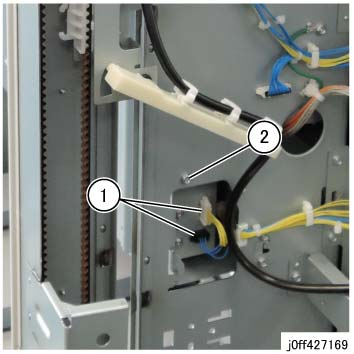
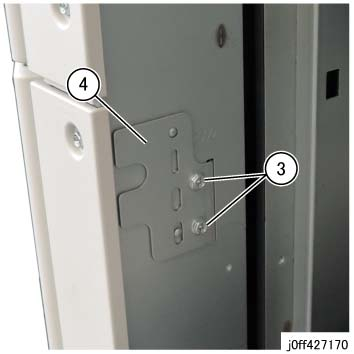
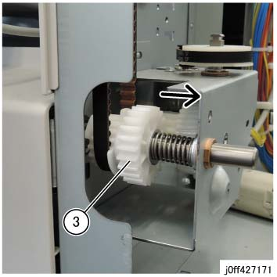
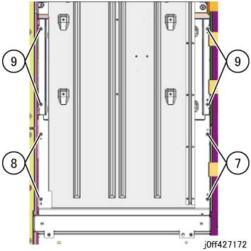
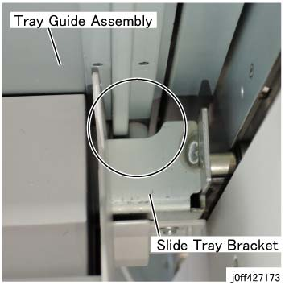
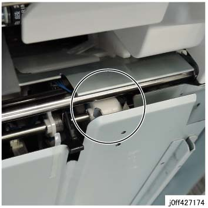
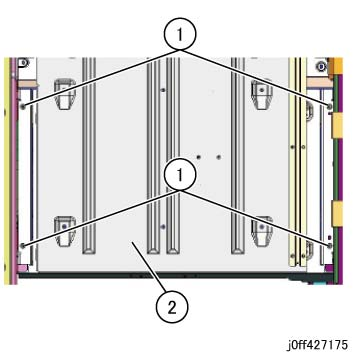

REP 27.10.1 纸盘 导轨 组件 (Base/小册子) 
参考 PL:PL 27.10
纸盘 导轨 组件 (Base)
Removal

执行IOT关机步骤. 确认电源已关闭并拔掉电源插头.
拆卸顶盖组件. (PL 27.15)
拆卸后上盖板组件. (PL 27.16)
拆卸后下盖板. (PL 27.16)
拆卸 纸盘 导轨 组件 (Base).
断开连接器（x2）. (图 1)
拆卸螺钉. (图 1)

(图 1) ff427169
拆卸螺钉（x2）. (图 2)
拆卸 Stopper 支架. (图 2)

(图 2) ff427170
当...时 supporting 堆叠器 纸盘 从底部, 拉动 齿轮 对接 离合器 到 后面, 和 下方 堆叠器 纸盘 up 到底部. (图 3)

If 堆叠器 纸盘 不是 supported 从底部, it 将 fall.

(图 3) ff427171
拆卸 底部 盖板. (PL 27.16)
拆卸螺钉 (2) 和 然后 the 后面 板 (PL 27.7). (图 4)
拆卸螺钉 (2) 和 然后 the 前面 板 (PL 27.7). (图 4)
拆卸螺钉（x4） 和 拆卸 纸盘 导轨 组件 (Base). (图 4)

(图 4) ff427172
安装
确保 the 滑动 纸盘 支架 导轨 is sandwiching the protruding 零件/部分 的 Rail at ...的后面 纸盘 导轨 组件. (图 5)

(图 5) ff427173
确保 支架 Setclamp is sandwiching the 链接 Setclamp. (图 6)

(图 6) ff427174
纸盘 导轨 组件 (小册子)
Removal
执行IOT关机步骤. 确认电源已关闭并拔掉电源插头.
执行 removal 步骤 1 to 4 (5) of 纸盘 导轨 组件 (Base) (REP 27.10.1).
拆卸 纸盘 导轨 组件 (小册子). (图 7)
拆卸螺钉（x4）.
拆卸 纸盘 导轨 组件 (小册子).

(图 7) ff427175
安装
请参阅 the 安装 注意事项 of 纸盘 导轨 组件 (Base) (REP 27.10.1).